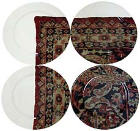

| The Interstitial:
The Dishes Are on the Floor (And Up the Wall)
Marek Cecula is taking the tradition of the
industrial ceramic decal one step further, one mile further.
by John Perreault
According
to some critics, craft has been assimilated by fine art, yet aside
from a few reviews in the N.Y. Times, I haven't noticed that the
battle had been won. I have not avoided writing about craft in these
pages [ed. note: NY Arts] because I thought the struggle was over,
but because it is time for me personally to move on to other issues.
Or more correctly, to find other ways of addressing my major theme.
Are craft artists, particularly ceramicists, nicer people? The
discipleship of the hand tends to reward generosity more than the
discipleship of the conceptual. But if the truth be known, craft
artists and their collectors can be as wickedly self-centered as
paint-on-canvas artists, non-craft sculptors and their collectors.
Curators and dealers are also naturally self-serving. So what else
is new?
What my writings have really been about from the beginning is the
interstitial, and ceramics, glass and other media-specific disciplines
fit quite nicely into that agenda. But before crafts, I wrote a
great deal about minimalism, conceptual art, video, performances,
realist painting, and then Pattern Painting, all of which are neither
fish nor fowl and combine or subvert more traditional categories.
I even specialized in design as well as craft in that once famous
and once influential weekly N.Y. newspaper, The Village Voice.
That artists I liked in the late '70s were assimilating craft (Joyce
Kozloff, et al) and in some cases design traditions (Scott Burton)
lead me to their sources and to seeing that these apparently lowly,
non-art inspirations were themselves art. In a sense, I was lead
back to early modernist, Futurist, Constructivist, and early Bauhaus
thinking, which had been conveniently repressed. Why this took place,
apparently in the '50s is for another essay. Suffice it to say,
that Lessing's 18th century notion that each media must be true
to itself, pure and untainted by other art forms, helped sell art
that was otherwise too difficult to understand.
But why my commitment to the problematic of the interstitial? Why
do I tend to favor genre-busting art? Genre-busting art is gender-busting
and anti-hierarchal. Reality is quite different from how manmade
categories divide it up for convenience, control and ownership.
Art to reflect reality should be uncanny rather than canny. The
either/or must be replaced by the both/and. A person or an object
can occupy several different categories simultaneously. Physics
may yet prove that two objects can occupy the same space. It's true
in art, so why not in Long Island? Why not in life?
Certainly it can now be proposed that Brancusi’s pedestals
and seating, Noguchi's lamps, and perhaps Oldenburg’s Bedroom
Ensemble lead to Burton's furniture sculptures and R. M. Fischer's
lamps and fountains and that these have lead to Andrea Zeitel. Thus
primary modernism resurfaced under post-modernism and will survive
the inevitable post-modernist eclipse.
Marek Cecula is a case in point. Cecula is someone I have followed
for a long time. He was one of the artists in my 1992 "More
Than One" exhibition of production craft, itself a portmanteau
concept, at the American Craft Museum. As a collector of modernist
dinnerware as well as a critic, I still love his Colorware, a mix-and-match
set of black-rimmed solid colors: chartreuse, saturated blue, off-red,
and bright yellow. Pop, post-pop, Bauhaus and Wright are some bases
touched. Much later, I wrote for American Ceramics about his brilliant
Scatology Series sculptures that cover gynecology, AIDS, and the
medical side of sanitary porcelain. Last year his one-man show at
Garth Clark was a further exploration of the body.
Like most artists working in New York, Cecula comes from elsewhere,
but in his case it is really elsewhere. He was born in Poland, was
a kibbutznik in Israel (which is where he learned ceramics), and
then worked in a ceramics factory south of Sao Paulo before he ended
up in Soho—in the early days. Cecula is nostalgic about the
once palpable artistic climate: anything could happen. And it did.
After Poland, Israel and Brazil, New York was the only place he
wanted to be.
One of the important things about Cecula is that he works in three
worlds: design, craft and sculpture. Design is still the hand that
feeds him, but it is not as if the two worlds are in isolation.
As in the larger world, one discipline influences the other. His
recent trope of using "found" ceramics and recontextualizing
them is an art world strategy. "The Porcelain Carpet Project,"
is an even more startling interchange or exchange or synthesis.

Timed to coincide with a NSECA clay conference, Cecula’s
largest artwork to date, unless you count his production output,
is a floorpiece specifically commissioned by Grand Arts, Kansas
City’s premier nonprofit art space. The Porcelain Carpet as
originally conceived and installed was three 12 by 16 foot rectangles
each made of 144 plates arranged in grids directly on the floor.
In "Phase I," the industrial produced blanks are blank.
In "Phase II," the black and white image of an actual
oriental carpet is superimposed on the array by the wonders of digital
photography and printing. "Phase III" offers the final,
full-color version. Each plate in "Phase II" and "Phase
III" if separated out would only show a fragment of the carpet,
photo perfect and illusionistically textured.
In order to set an example, I should disclose that until last year
I was on the advisory committee of Grand Arts but seemed to have
missed any meetings, if there were such, that resulted in Cecula’s
commission/residency.
From September through October a new version of "Phase III"
was on exhibit at the new branch of the Garth Clark Gallery in Long
Island City, next to the Post Office across the street from P.S.1.
In spite of 9/11, Garth Clark, noted ceramics historian and art
dealer, and his partner Mark Del Vecchio have stuck to their plan
to move their 57th Street gallery storage to Queens and expand by
opening a new venue their for larger ceramics. Cecula's "Porcelain
Carpet" was featured in the opening exhibition, "Groundswell:
The Postindustrial Wave in Ceramic Sculpture." Here "Phase
III", one corner of which crawled up the wall, became simply
"Porcelain Carpet."
Cecula is taking the tradition of the industrial ceramic decal
one step further, one mile further. Sets could be made in which
each plate would be different but that would add up to a larger
image. But that is not the point. Most of these dishes are on the
floor. They depict a fine oriental rug, but it is a magic carpet
you cannot step on. The Porcelain Carpet may be about the dinnerware
tradition but it is also about conventions, the body, displacement,
and the space within a room. Just because the plates are on the
floor doesn't mean you should eat off the floor.
John Perreault writes regularly for www.artsjournal.com/artopia.
© John
Perreault 2002. First print publication: NY Arts, November
2002. Reproduced by courtesy of the author.
More Articles
More Articles |